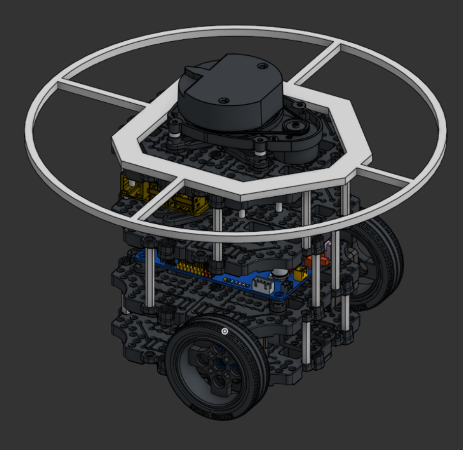
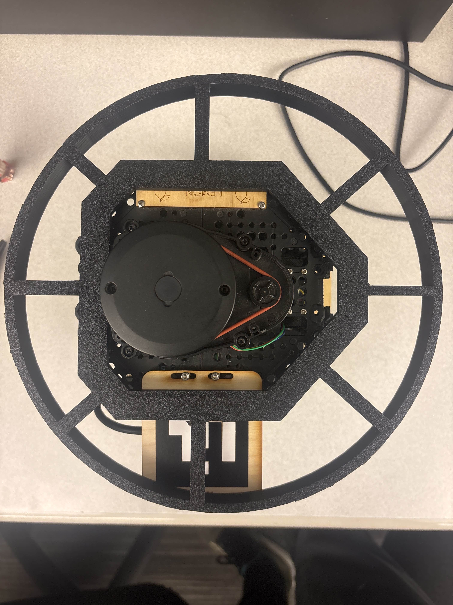

System architecture, design decisions, and technical approach
Design Criteria
Mapping: Accurately map the environment to identify obstacles, free space, and the seeker and target robot poses in real-time.
Trajectory: Plan and execute an optimal trajectory for the seeker robot to intercept the target robot while avoiding obstacles with smooth, efficient paths.
Real-time Performance: Ensure the system operates in real-time to adapt to dynamic changes in the environment and target movement, with control updates at 10 Hz and state estimation at 100 Hz.
Robustness: Handle sensor occlusions, noisy measurements, and hardware variations through multi-modal sensor fusion and state propagation.
Design Overview
Sensing
The seeker turtlebot uses RealSense USB camera and LIDAR to navigate obstacles and locate the target. The target turtlebot also uses LIDAR for mapping.
Action Items
Integrate Cartographer SLAM for global mapping
Develop Fast Local Grid for real-time obstacle awareness (5-10 Hz)
Integrate 6-layer HSV heuristic system on USB camera to detect cones
Implement LIDAR-based target localization using map origins and Kabsch algorithm
Automatic LIDAR frame calibration for unknown mounting orientations
Deliverables
Fast local occupancy grids (5-10 Hz updates)
Yellow and blue cone detection for obstacles and target respectively (target elevated ~10 cm)
Robust LIDAR-based target pose estimation with confidence scoring
Multi-modal sensor fusion with confidence-based weighting
Planning
Using current knowledge of surroundings and state estimates for both robots, calculate an optimal trajectory from seeker to target with obstacle avoidance.
Action Items
State estimation of seeker using Extended Kalman Filter (EKF) fusing IMU, magnetometer, and encoders (100 Hz)
State estimation of target using multi-sensor fusion (LIDAR map alignment + camera detections + UKF for velocity tracking)
Plan optimal trajectories using Model Predictive Control (MPC) with obstacle constraints
Implement state propagation for target tracking during occlusions
Develop waypoint generation for complex obstacle navigation
Deliverables
High-rate EKF pose estimation (100 Hz) for smooth control
Accurate target state estimation with state propagation during occlusion
Efficient, autonomous navigation through obstacles with MPC
States and confidences visualized in RViz
Actuation
The target turtlebot moves freely along a predesigned trajectory. The seeker turtlebot follows the MPC-calculated optimal trajectory.
Action Items
MPC directly outputs velocity commands (/cmd_vel) to robot base
Design simple target trajectories for testing
Implement terminal guidance for final approach
Emergency recovery system for stuck situations
Deliverables
Smooth trajectory following via MPC
Terminal guidance and final approach behaviors
Adaptive velocity scaling based on obstacle proximity
Interception!
Mapping Architecture: Dual-Layer Approach
Our mapping system uses a complementary dual-layer architecture that balances global consistency with real-time responsiveness.
Cartographer SLAM (Global Mapping)
Update Rate: 1-2 Hz (slower, more computationally intensive)
Purpose: Global map consistency, loop closure, and accurate pose estimation
Algorithm: Production-grade SLAM with scan matching, submaps, and loop closure detection
Obstacle Decay:decay_rate = 0.95 for gradual forgetting of old obstacles
Complementary to Cartographer: Provides real-time awareness while Cartographer ensures global consistency
Why Fast Local Grid? MPC needs obstacle information at 10 Hz for smooth control. Cartographer's 1-2 Hz updates would cause jerky obstacle avoidance. The fast local grid bridges this gap by providing immediate obstacle awareness while Cartographer maintains the accurate global map.
SLAM Node Implementation
Our custom SLAM node uses log-odds occupancy grid mapping for reliable map building from LIDAR scans.
The SLAM node processes LIDAR scans at the scan rate, updating the internal log-odds map. The map is published at 10 Hz for real-time visualization and integration with other nodes.
Algorithm Selection Rationale
EKF over MCL for Robot Pose
Update Rate: EKF runs at 100 Hz vs. MCL's computational limits (~10 Hz)
3D printed halo attachment for both seeker and target robots. Attached to both robots to ensure robot safety upon interception.

CAD: 3D printed attachment

Attachment on turtlebot
Design Evolution & Lessons
Our design evolved significantly based on real-world testing and performance requirements:
Initial Approach: LIDAR-Only Perception
We initially planned to rely solely on LIDAR for obstacle detection. However, testing revealed several limitations:
Depth Accuracy: LIDAR provides excellent distance measurements but struggles with thin objects and cones at certain angles
Occlusion Issues: Multiple obstacles can cause detection gaps
False Positives: Reflections and noise create spurious detections
Robustness: Single-sensor systems lack redundancy
Final Approach: Multi-Modal Sensor Fusion
Integrating camera-based detection solved many problems:
Complementary Strengths: Camera provides angular accuracy, LIDAR provides distance accuracy
Redundancy: Multiple sensors increase robustness to failures
Close-Range Performance: Camera excels at detecting cones within 1-3 meters
Color Discrimination: HSV filtering distinguishes yellow obstacles from blue target
Real-World Validation: Mirrors production systems (Waymo uses LIDAR + cameras, Tesla uses cameras)
Key Insight: In real-world scenarios, combining multiple sensor types leads to more robust and reliable autonomous systems. This design philosophy, inspired by production autonomous vehicles, proved essential for handling the complexity and uncertainty of real environments.